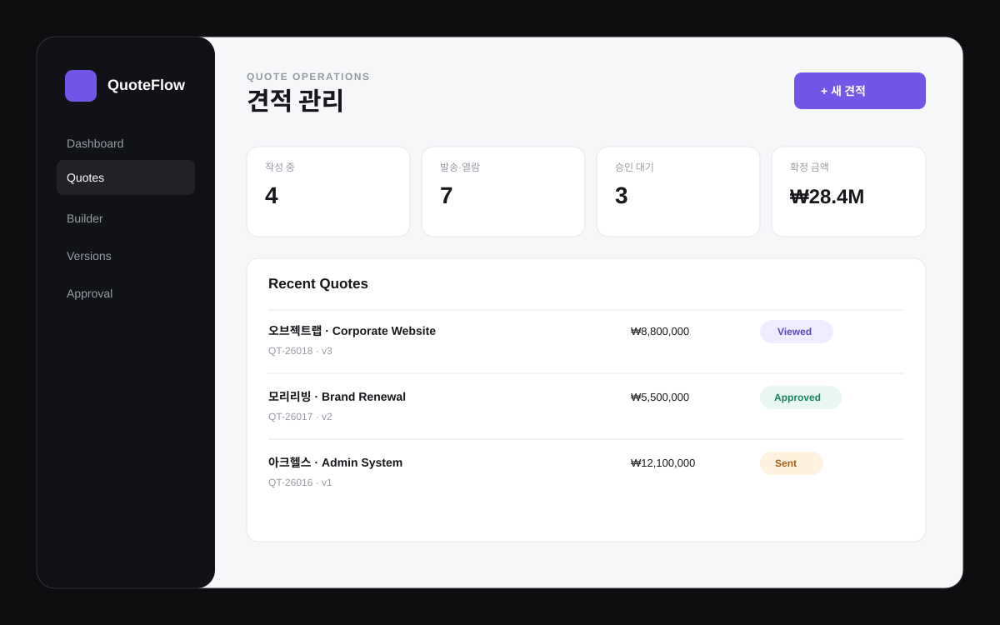

매번 다시 계산할 때
서비스 항목, 수량과 단가를 입력하면 공급가액, VAT와 총액을 자동 계산합니다.
QUOTEFLOW / SYSTEM SOLUTION 10
QuoteFlow는 고객 선택, 견적 항목 구성, 금액 계산, 버전 관리, 발송, 열람과 승인까지 하나의 흐름으로 관리하도록 설계한 영업 지원 시스템입니다. 견적서를 만들고 다시 찾는 시간을 줄이고, 어떤 버전이 발송됐는지와 현재 승인 상태를 명확하게 확인합니다.

WHY QUOTEFLOW
고객마다 서비스 조합과 금액이 달라지면 견적서를 복사해 다시 만들고, PDF를 발송한 뒤 어떤 버전이 최종인지 따로 확인하게 됩니다. QuoteFlow는 견적 항목과 금액, 버전, 발송 상태와 승인 결과를 하나의 데이터로 연결합니다.
서비스 항목, 수량과 단가를 입력하면 공급가액, VAT와 총액을 자동 계산합니다.
수정 견적을 새 버전으로 복제해 고객별 변경 이력을 명확하게 남깁니다.
Draft, Sent, Viewed, Approved, Declined 상태로 현재 견적의 위치를 확인합니다.
SCREEN GUIDE
각 메뉴를 누르면 실제 QuoteFlow 데모의 해당 화면으로 미리보기가 바뀝니다. 전체 데모에서는 견적 생성, 항목 추가, 자동 금액 계산, 버전 복제와 승인 상태 변경을 직접 사용할 수 있습니다.
작성 중 견적, 발송 견적, 승인 대기와 확정 금액을 한 화면에서 확인합니다.
WORKFLOW
QuoteFlow는 PDF 한 장을 만드는 데모가 아니라 견적이 수정되고 발송되고 승인되는 실제 영업 흐름을 관리하는 구조를 보여줍니다.
회사와 담당자를 선택하고 견적 제목과 유효기간을 설정합니다.
서비스, 수량과 단가를 추가해 공급가액과 VAT, 총액을 자동 계산합니다.
협의 과정의 변경 견적을 새 버전으로 복제해 이전 금액과 함께 보관합니다.
발송과 열람 상태를 확인하고 승인된 견적을 계약 진행 기준으로 사용합니다.
FULL INTERACTIVE DEMO
새 견적 생성, 서비스 항목 추가, VAT 자동 계산, 견적 상태 변경, 버전 복제와 고객 승인·거절 처리를 직접 확인할 수 있습니다. 입력 데이터는 현재 브라우저에만 임시 저장됩니다.
CUSTOM SYSTEM
서비스별 단가표, 할인, 부가세, 내부 결재, 고객 승인, 전자서명과 계약 연결까지 실제 영업 방식에 맞춰 별도로 설계할 수 있습니다.